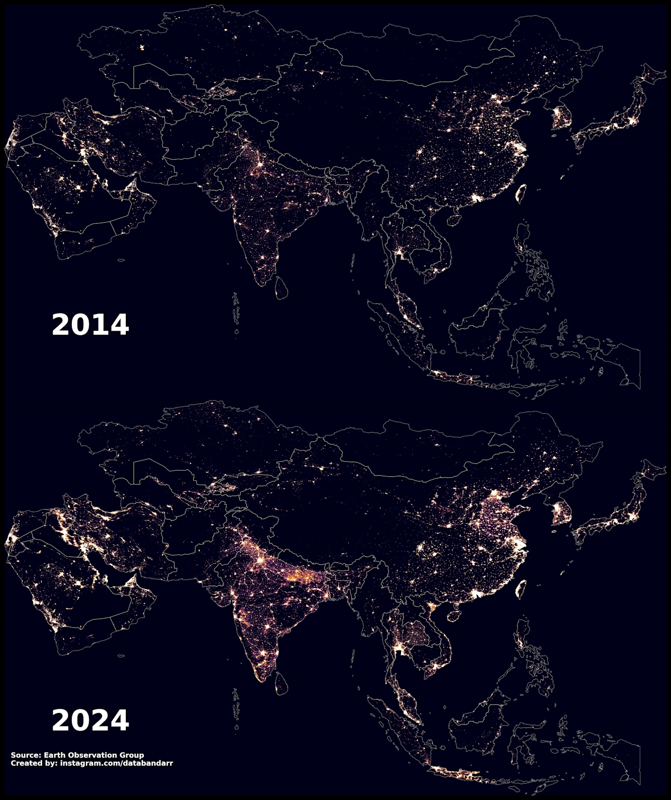

Nightlights Intelligence
Real‑time economic nowcasting using satellite nightlights with 0.88 GDP correlation
Economic Intelligence
HAWKEYE Nightlights Intelligence uses VIIRS DNB monthly composites as a real‑time proxy for economic activity, achieving a 0.88 correlation with historical GDP and showing +10.4% year‑over‑year radiance growth in Dhaka (2024: 23.75 vs 2023: 21.53).
The pipeline standardizes and denoises nightlight radiance, aligns it with macroeconomic series, and nowcasts GDP in near real‑time to eliminate quarterly lag in official releases.
Operational Scale
Build a robust, operational GDP nowcasting signal from satellite nightlights that updates monthly, scales city‑ and district‑level, and integrates into a multi‑domain Urban Intelligence stack for planning and policy evaluation.
Primary geographical focus is Dhaka, Bangladesh (2022–2025), with generalization to other cities supported by the same VIIRS DNB compositing and normalization routines.

Mission Critical
- Convert VIIRS nightlight radiance into a calibrated, interpretable, and statistically validated economic indicator usable for nowcasting GDP and tracking urban economic “metabolism.”
- Fuse the indicator with health and environmental signals in a standardized feature space to support multi‑objective urban planning, resource allocation, and intervention timing.
Multi-Modal Fusion
VIIRS Nighttime Lights
NOAA DNB monthly composites (avg_rad in nW/cm²/sr) at ~500 m resolution for spatially aggregated economic activity.
GDP & Macro Indicators
Annual GDP, inflation, and trade series for correlation, scaling, and policy‑aware interpretation.
Auxiliary Context
Weather and demographics for confounder checks and partial correlation tests during validation.
Output Specifications
- Nightlight radiance metrics: Monthly mean/median/trimmed mean and high‑quantile (p90/p95) radiance aggregated over AOIs.
- Economic targets: Annual GDP levels and growth, with derived monthly nowcasts and uncertainty bounds based on nightlights dynamics.
Pipeline Architecture
Ingestion and gridding: Load monthly VIIRS composites, clip to AOI, mask stray light/cloud artifacts, and compute robust aggregate statistics.
Normalization and denoising: Z‑score or min‑max scaling across time per AOI, with trimmed means to suppress outliers and lunar contamination residuals.
Alignment and modeling: Align monthly nightlights with GDP via log‑log regression and elastic regularization; validate stability and compute nowcasts with uncertainty.
Data Quality Controls
Key processing rules guiding the pipeline:
Spatial Aggregation
Prefer trimmed mean to reduce flare outliers:
$$ \text{Trimmed Mean} = \frac{1}{n-2k}\sum_{i=k+1}^{n-k} x_{(i)} $$
Temporal Smoothing
$$ \text{MA}_3(t) = \frac{1}{3}\sum_{i=t-1}^{t+1} \text{NL}_i $$
3-month centered average to reduce seasonal noise
Confounder Checks
Partial correlation controlling for weather:
$$ r_{xy \cdot z} = \frac{r_{xy} - r_{xz}r_{yz}}{\sqrt{(1-r_{xz}^2)(1-r_{yz}^2)}} $$
Log-Log Regression
Correlation and regression: Establish baseline correlation $$ r=0.88 $$ between aggregated nightlights and GDP, then fit a log‑log model $$ \log(\text{GDP}) = \beta_0 + \beta_1\log(\text{NL}) + \epsilon $$.
Nowcasting
- Monthly nightlights changes
- Continuous GDP growth estimates
- Bootstrap confidence intervals
Multi‑Signal Fusion
Integrate nightlights with other urban indicators in gradient‑boosted regressors for sensitivity tests.
Key Formulas
Year‑Over‑Year Growth
$$ \text{YoY} = \frac{\text{NL}_{t} - \text{NL}_{t-12}}{\text{NL}_{t-12}} \times 100 $$
Yielding +10.4% radiance growth in 2024
Pearson Correlation
$$ r = \frac{\sum (x-\bar{x})(y-\bar{y})}{\sqrt{\sum (x-\bar{x})^2}\sqrt{\sum (y-\bar{y})^2}} = 0.88 $$
For nightlights vs GDP
Log‑Log Regression
$$ \log(\text{GDP}) = \beta_{0} + \beta_{1}\log(\text{NL}) + \epsilon $$
With $$\beta_1$$ interpreted as elasticity
Code Snippets
VIIRS Preprocessing
# viirs_monthly is xarray/raster stack; aoi is polygon
arr = viirs_monthly.sel(time=slice("2022-01","2025-12"))
clipped = arr.rio.clip([aoi], all_touched=True, drop=True)
nl = clipped.where(clipped>0).where(clipped<200) # basic mask
monthly_trimmed = nl.reduce(np.nanmean, dim=("x","y"))
# 10% trim example (vectorized):
def trimmed_mean(v, p=0.1):
w = np.sort(v[~np.isnan(v)])
k = int(len(w)*p)
return w[k:len(w)-k].mean() if len(w)>2*k else np.nanCorrelation & Regression
import numpy as np
from sklearn.linear_model import LinearRegression
gdp_log = np.log(gdp.values)
nl_log = np.log(monthly_trimmed.resample(time="A").mean().values) # annualized
r = np.corrcoef(nl_log, gdp_log)[0,1] # ~0.88
X = nl_log.reshape(-1,1); y = gdp_log
model = LinearRegression().fit(X, y)
beta1 = model.coef_[0] # elasticityMonthly Nowcasting
# Map monthly NL changes to GDP growth nowcasts via rolling regression
window = 36
nowcasts = []
for t in range(window, len(nl_series)):
Xw = np.log(nl_series[t-window:t]).reshape(-1,1)
yw = gdp_growth_annualized[t-window:t]
m = LinearRegression().fit(Xw, yw)
y_hat = m.predict(np.log(nl_series[t]).reshape(1,-1))[0]
nowcasts.append(y_hat)Results Obtained
Economic Proxy Strength
Nightlights–GDP correlation $$ r=0.88 $$ confirms radiance as a strong proxy for economic activity in Dhaka.
Growth Signal
Nightlight radiance increased +10.4% YoY, with 2024 aggregate 23.75 vs 21.53 in 2023, indicating broad‑based activity gains.
Data Quality
1,105 temporal records across 36 features with only 0.16% missing data in the fused urban dataset, enabling robust validation.
Growth Rate
Year-over-year growth of +10.4% indicates strong economic momentum in Dhaka.
Decision Relevance
- Near‑real‑time nowcasting: Monthly updates provide a leading view on economic momentum, useful for budget adjustments, stimulus timing, and infrastructure phasing.
- Spatial planning: Radiance gradients highlight growth corridors and under‑served zones for targeting utilities, transit, and safety interventions.
- Policy evaluation: Pre/post interventions can be assessed via radiance deltas, offering a rapid, independent check on economic impact.
What Makes It Work
Robust Aggregation
Trimmed means and masking reduce flare and outlier contamination, stabilizing the relationship against artifact noise.
Elastic Scaling
Log‑log specification captures multiplicative growth and scale‑free relationships between economic output and radiance.
Multi‑Domain Controls
Incorporating weather and demographics during validation reduces spurious correlations and improves transferability.
Operationalization & Outputs
Deliverables
- Monthly AOI‑level time series (CSV/Parquet)
- Annualized radiance indices
- GDP nowcasts with confidence bands
- District‑level choropleths
Integration
Batch job updates nightlights indices monthly; nowcasts are published to the Urban Intelligence dashboard API alongside health and climate layers.
Limitations & Risks
Non‑Economic Radiance
Lighting policy changes, outages, or festive spikes can distort signals; smoothing and anomaly flags mitigate but do not eliminate risk.
Spatial Bias
Affluent areas may be over‑lit while informal economies are under‑lit, requiring supplemental indicators for equity‑aware analysis.
Transferability
Elasticities may differ across cities; rolling recalibration is required when applying models to new geographies.
Future Scope
Sectoral Disaggregation
Combine nightlights with land‑use to attribute growth to industrial, commercial, or residential segments.
Real‑Time Feeds
Ingest higher‑frequency proxies (mobile mobility, POS data) to refine intra‑month nowcasts and shock detection.
Policy Sandboxes
Run counterfactuals (e.g., tariff or curfew changes) and evaluate expected radiance and GDP impacts via structural models.